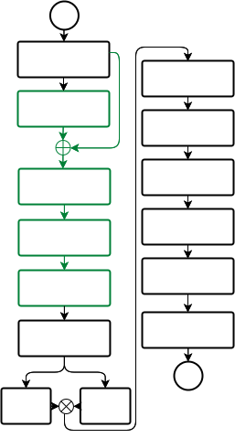
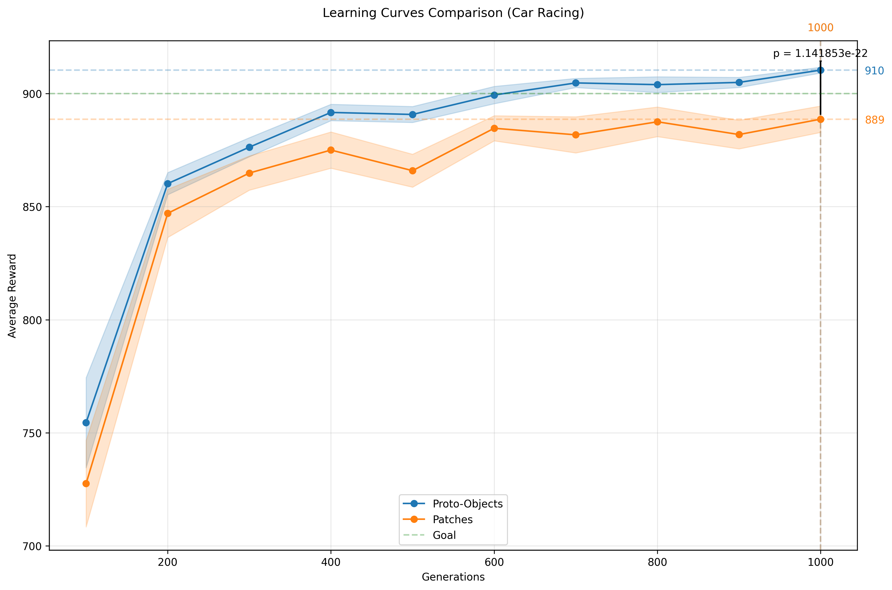
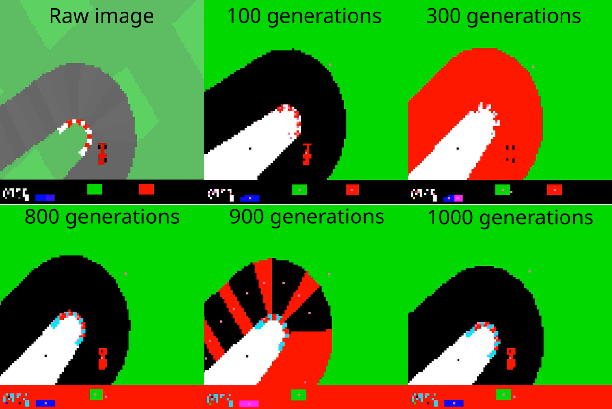
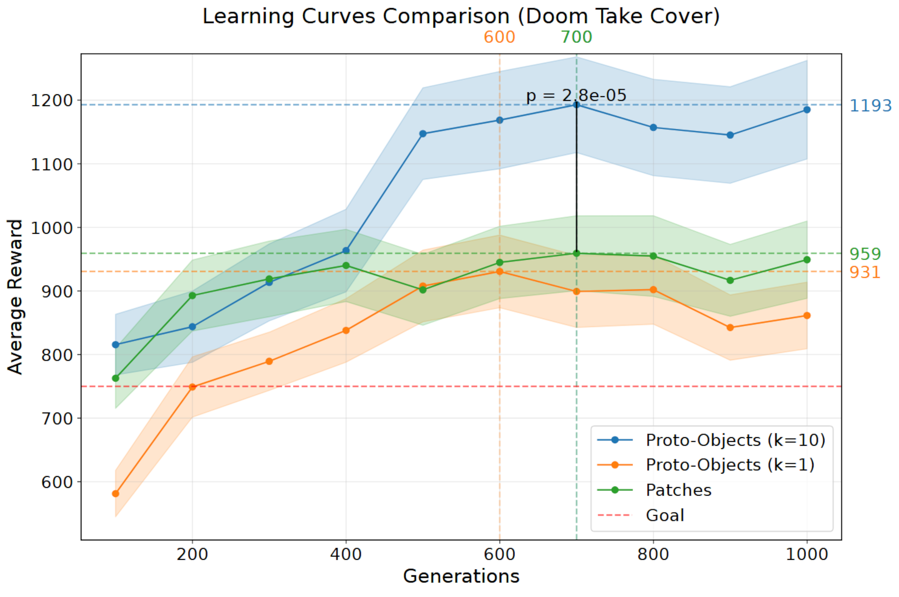

Los protoobjetos (regiones de la imagen que comparten propiedades visuales comunes) ofrecen una alternativa prometedora a los mecanismos de atención tradicionales basados en parches rectangulares de imagen en redes neuronales. Aunque trabajos anteriores demostraron que hacer evolucionar un módulo de atención dura basado en parches junto con una red controladora podía lograr un rendimiento al nivel del estado del arte en tareas de aprendizaje por refuerzo visual, nuestro enfoque aprovecha la segmentación de imágenes para trabajar con características de más alto nivel. Al operar sobre protoobjetos en lugar de parches fijos, reducimos significativamente la complejidad de representación: cada imagen se descompone en menos protoobjetos que en parches regulares, y cada protoobjeto se puede codificar de manera eficiente como un vector de características compacto. Esto permite un módulo de autoatención sustancialmente más pequeño que procesa información semántica más rica. Nuestros experimentos demuestran que este enfoque basado en protoobjetos iguala o supera el rendimiento del estado del arte de las implementaciones basadas en parches con un 62% menos de parámetros y 2,6 veces menos tiempo de entrenamiento.
Los mecanismos de atención visual han emergido como una solución poderosa para reducir la complejidad computacional en tareas de percepción de alta dimensión. Al crear un cuello de botella de información entre las entradas visuales y las redes de control, estos mecanismos permiten el procesamiento eficiente de escenas complejas [14]. Trabajos recientes han demostrado que hacer evolucionar un módulo de atención dura conjuntamente con un controlador LSTM [10] puede producir agentes notablemente eficientes que operan únicamente sobre pequeños parches de imagen [22]. Este enfoque no solo generó redes neuronales órdenes de magnitud más pequeñas que los métodos competidores, sino que también logró resultados al nivel del estado del arte en entornos desafiantes de aprendizaje por refuerzo como Car Racing y Doom Take Cover [3]. El éxito proviene de la capacidad de la capa de atención para filtrar regiones de entrada irrelevantes, simplificando la tarea del controlador al tiempo que proporciona una generalización robusta y resistencia al ruido.
Avanzamos en esta línea de investigación al reemplazar los parches de tamaño fijo y distribuidos uniformemente por protoobjetos (regiones coherentes de características visuales localmente uniformes [6]) obtenidos mediante segmentación de imágenes [7]. Este cambio en la representación ofrece dos ventajas clave. En primer lugar, proporcionan una representación más compacta, ya que la mayoría de las escenas se descomponen en menos protoobjetos que en parches. En segundo lugar, cada protoobjeto codifica información semántica más rica a través de un pequeño vector descriptor que captura propiedades como forma, tamaño y color.
Este enfoque basado en protoobjetos permite una arquitectura significativamente simplificada. El módulo de autoatención se vuelve sustancialmente más pequeño mientras procesa características de nivel más alto, lo que conduce a una mejor selección y a información mejor filtrada para el controlador, el cual también puede simplificarse. Nuestros resultados en los entornos Car Racing y Doom Take Cover [3] demuestran que esta arquitectura más eficiente iguala o supera el rendimiento de las implementaciones basadas en parches, reduciendo el número de parámetros en un 62% con un entrenamiento 2,6 veces más rápido.
El modelado de la atención visual humana ha sido un área de investigación activa durante los últimos 35 años. Se han propuesto muchos modelos diferentes de atención que, además de aportar contribuciones teóricas a la neurociencia y la psicología, han demostrado aplicaciones exitosas en visión por computador y robótica [2]. Los primeros modelos computacionales se centraron principalmente en la atención ascendente (bottom-up) basada en la saliencia, mientras que los enfoques más recientes han incorporado influencias descendentes (top-down) y mecanismos de selección basados en objetos.
El sistema visual biológico proporciona información crucial para diseñar sistemas eficientes de visión artificial. Una restricción fundamental es que los recursos neuronales son limitados: Koch et al. [11] demostraron que las células ganglionares de la retina equilibran los costes metabólicos con la transmisión de información, logrando una codificación altamente eficiente a pesar de utilizar frecuencias de disparo relativamente bajas. Esto sugiere una presión evolutiva hacia cuellos de botella estratégicos de información en lugar de intentar procesar toda la entrada por igual. Walther y Koch [28] mostraron que uno de estos cuellos de botella ocurre al nivel del protoobjeto, donde se seleccionan regiones coherentes de la escena para un procesamiento mejorado antes de que ocurra el reconocimiento completo del objeto. Esto permite al sistema visual serializar escenas complejas en bloques manejables mientras mantiene una alta eficiencia de codificación.
La atención visual en los sistemas biológicos opera a través de tres mecanismos primarios. La atención basada en el espacio opera en ubicaciones específicas del campo visual, tratando la atención como un foco que mejora el procesamiento en coordenadas espaciales seleccionadas. La atención basada en características mejora selectivamente el procesamiento de características específicas (como el color, la orientación o el movimiento) en todo el campo visual, independientemente de la ubicación espacial. La atención basada en objetos opera en elementos agrupados perceptivamente que forman objetos coherentes, lo que sugiere que la atención selecciona representaciones completas de objetos en lugar de solo ubicaciones espaciales o características individuales [5, 25, 27].
Un mecanismo clave en la atención computacional moderna es la capa de autoatención. En su forma estándar [26], la autoatención opera sobre un conjunto de N vectores de entrada, cada uno de dimensión din, transformándolos linealmente a través de matrices de pesos aprendidas WO y WK para obtener las matrices de Consulta (Query - Q) y Clave (Key - K):
S = softmax( QKT / √dk ) (1)
donde dk es la dimensión de los vectores clave. Las puntuaciones de atención S muestran qué tan relacionados están los elementos de entrada. S se combina además con una matriz V, que también es una transformación lineal de la entrada, para formar la representación contextual A = SV, cuyos vectores contienen la representación de cada entrada considerando el contexto general.
Los protoobjetos son una representación intermedia entre las características visuales brutas y los objetos completamente reconocidos [19, 28]. Se forman durante el procesamiento preatencional y representan regiones coherentes del campo visual que comparten propiedades visuales comunes. Estas estructuras sirven como candidatos potenciales para la atención antes de que ocurra el reconocimiento completo del objeto [16], lo que permite al sistema visual priorizar eficientemente los recursos de procesamiento.
Los cuellos de botella de información en el procesamiento visual sirven para comprimir la entrada visual de alta dimensión en representaciones más manejables mientras se preserva la información relevante para la tarea [11, 23]. Estos cuellos de botella pueden ocurrir en varios niveles de procesamiento, desde las características visuales iniciales hasta el reconocimiento de objetos, y desempeñan un papel crucial en la gestión de los recursos computacionales necesarios para el procesamiento visual [29]. La formación de protoobjetos en sí misma representa un cuello de botella de información natural, ya que reduce la complejidad de la escena visual mientras mantiene información relevante para el comportamiento [28].
Nuestro trabajo se basa en y conecta varias direcciones de investigación en visión por computador, aprendizaje profundo y computación evolutiva. Combinamos ideas de modelos biológicos de atención visual, arquitecturas neuronales eficientes y técnicas clásicas de visión por computador para crear un sistema híbrido que aprovecha las fortalezas de cada enfoque. Aplicamos mecanismos de atención dura a protoobjetos en lugar de píxeles brutos o parches arbitrarios. Este enfoque implementa un cuello de botella de información similar al que Koch et al. [11] observaron en sistemas biológicos, mientras opera sobre los protoobjetos semánticamente significativos descritos por [16, 19]. Al seleccionar solo los protoobjetos más relevantes para el procesamiento, creamos un cuello de botella de información en un nivel semánticamente más significativo que los enfoques anteriores.
Esta combinación es particularmente adecuada para la neuroevolución, ya que la selección discreta de los top-k protoobjetos y la transferencia de coordenadas al controlador crean operaciones no diferenciables que son desafiantes para los métodos basados en gradientes pero naturales para los enfoques evolutivos. Además, al forzar al modelo a ser explícitamente selectivo sobre qué partes de la entrada visual procesa, ganamos interpretabilidad directa: podemos visualizar exactamente qué protoobjetos considera el modelo importantes para sus decisiones, lo que proporciona información sobre su proceso de toma de decisiones que a menudo falta en los enfoques tradicionales de aprendizaje profundo.
Nuestro método consta de 5 etapas principales: convolución, cuantización, segmentación, atención y control, descritas a continuación.
La etapa de convolución tiene como objetivo desplazar, reescalar, filtrar y/o mezclar los canales de la imagen original, proporcionando una representación preprocesada para las siguientes etapas. En particular, en nuestros experimentos, utilizamos una sola capa convolucional con 3 filtros de 1x1. La elección de 3 filtros es necesaria para la compatibilidad con la conexión residual. Es posible agregar más capas convolucionales siempre que mantengan el mismo tamaño de imagen. En este caso, agregar una capa final con 3 filtros es suficiente para reducir el número de dimensiones al mismo número de canales de la imagen. Tras esto, sumamos la imagen original a la salida de la convolución, formando una conexión residual [9], cuya función quedará clara en la siguiente etapa.
La cuantización busca reducir la cantidad de información a procesar en las siguientes etapas. En nuestros experimentos, realizamos una cuantización uniforme simple de la salida de la convolución utilizando 1 bit por canal (podría ser más para tareas más complejas, e incluso podría hacerse evolucionar). Como resultado, obtenemos una imagen con como máximo 8 colores distintos, cada uno de los cuales representa un tipo diferente de segmento. Tenga en cuenta que, además de ser una cuantización fija simple, su combinación con la capa convolucional anterior da como resultado un mecanismo de segmentación y cuantización adaptativo.
Esta etapa tiene sinergia con las convoluciones: el desplazamiento, el reescalado y la mezcla de los canales de la imagen original pueden colocarlos en diferentes intervalos de cuantización. Pero dado que existen saltos discontinuos en la superficie de aptitud evolutiva necesarios para encontrar una segmentación adecuada (lo cual puede llevar algún tiempo descifrar al algoritmo evolutivo), utilizamos la conexión residual de la etapa anterior como un medio para reiniciar la evolución desde una segmentación trivial sobre los colores originales de la imagen. Por lo tanto, el propósito de la convolución es cambiar la segmentación alejándola de la trivial (si es necesario).
La segmentación tiene como objetivo crear los protoobjetos, es decir, descriptores para regiones de píxeles semánticamente similares recibidos de las etapas anteriores. En este trabajo, aplicamos el etiquetado de imágenes por regiones conectadas por color [7, 20]. De cada región extraída se puede obtener un conjunto de atributos, lo que da como resultado din características (las regiones de 1 píxel de ancho o alto se tratan como ruido y se ignoran).
Tras una rigurosa experimentación, llegamos a un conjunto de din = 11 características, a saber: color del segmento cuantizado (R, G, B), centro de masa (X, Y), área total en píxeles, ancho de la caja delimitadora, alto de la caja delimitadora, área de la caja delimitadora, relación de aspecto y extensión (área de la caja delimitadora dividida por el área de la región). Todas ellas se pueden calcular de forma sencilla y eficiente a partir de las regiones obtenidas, y ayudarán a la siguiente etapa a tomar decisiones más informadas. La orientación (correlación entre las coordenadas de los píxeles) también podría ser útil, pero añadía demasiada sobrecarga en el tiempo de ejecución a nuestro modelo y se dejó fuera. Todos los valores se normalizan entre -1 y 1, y la relación de aspecto también se transforma mediante logaritmo de modo que 1 y -1 correspondan a proporciones extremas, mientras que 0 significa lados iguales:
NormAspectRatio = 2 * log(aspectRatio) / log(max(imageWidth, imageHeight)) - 1
El módulo de atención busca modelar las relaciones entre los protoobjetos identificados en la etapa de segmentación. Las características de los N protoobjetos se introducen en la capa de atención de nuestro modelo como un conjunto de N tokens de dimensión din, en la jerga de atención [26]. La capa de atención incrusta estos tokens en dos vectores Q y K de dimensión dq. Sin embargo, hay un toque adicional en nuestra implementación: agregamos una capa de Unidad Rectificada Lineal Paramétrica (PReLU) antes y después de las transformaciones lineales. PReLU es una generalización de la activación ReLU, donde la pendiente de la parte negativa es adaptativa (PReLU(x) = max(ax, x)) para cada capa o neurona (este último en nuestro caso). Por solo 15 parámetros adicionales, esto permite a nuestra capa de atención modelar relaciones más complejas, ya que se demostró que una sola neurona PReLU resuelve el problema XOR [17]. En nuestro caso, permite la selección de valores de rango medio (como los colores grises) cuando a es negativo (haciendo que la función no sea monotónica), lo cual no es posible con capas lineales puras. En su lugar, se podrían utilizar más capas de autoatención tradicional, pero en este trabajo optamos por la solución PReLU más simple para mantener bajos el número de parámetros y el tiempo de ejecución.
Continuando con el procedimiento habitual de autoatención, se calcula una matriz de atención mediante la Ec. 1, y luego se obtiene un vector de importancia mediante la suma por filas. En lugar de la mezcla habitual de tokens con una matriz V realizada en la autoatención tradicional, simplemente realizamos la selección de los top-k protoobjetos sobre la suma por filas resultante.
Destacamos que el cálculo de atención tiene una complejidad temporal asintótica cuadrática sobre el número de tokens N. Reducir drásticamente el número de tokens mediante el uso de protoobjetos en lugar de parches hace que nuestro módulo de atención sea mucho más rápido.
En nuestros experimentos, fuimos al extremo y fijamos k = 1 (las coordenadas de un solo protoobjeto se pasan al controlador, que se describe a continuación). Esto es posible porque nuestro módulo de atención es más expresivo que el original y los protoobjetos contienen información de más alto nivel, lo que hace que un solo protoobjeto bien seleccionado sea suficiente para que el controlador tome sus decisiones (una mejor selección significa menos trabajo para el controlador). También es más plausible biológicamente, ya que nos enfocamos en un solo elemento visual a la vez [4].
Finalmente, la etapa de control selecciona una acción a realizar en el entorno. En nuestra implementación, se aplica una función de transferencia f(n) a cada vector de características de los protoobjetos seleccionados y los resultados se concatenan y se introducen como entrada a un controlador LSTM [10], el cual es responsable de aprender asociaciones temporales y producir la salida de control.
En nuestro caso, f(n) solo devuelve las coordenadas del centro de masa del protoobjeto. Se podrían utilizar funciones de transferencia más elaboradas para alimentar al controlador con más propiedades de cada protoobjeto seleccionado, pero el centro de masa fue suficiente para nuestros problemas. Esto es posible porque la evolución conjunta de los módulos de atención y control da como resultado un "acuerdo" implícito: al seleccionar siempre el mismo tipo de protoobjeto (césped, pista, etc.), no hay necesidad de que el controlador adivine cuál es. Si la atención se centrara en diferentes tipos de protoobjetos cada vez, no sería posible distinguirlos únicamente por sus coordenadas, a menos que aparecieran consistentemente en regiones específicas de la pantalla, siendo distinguibles por la posición (como la pantalla de visualización frontal que siempre está en la parte inferior de la pantalla). También podrían ser distinguidos por el controlador si el módulo de atención coloca consistentemente los mismos tipos de protoobjetos en los mismos puestos de clasificación (por ejemplo, el césped primero, la pista segundo), pero esta es una pieza adicional de complejidad que debe aprenderse.
En la Tabla 1 se muestra un resumen de las diferencias entre nuestras elecciones de hiperparámetros y el trabajo anterior basado en parches de imagen [22], así como el número resultante de parámetros entrenables en cada modelo, lo que demuestra que nuestro modelo es significativamente (62%) más pequeño en total, debido a su capa de atención compacta y a un cuello de botella más pequeño con k = 1. El proceso completo se puede ver en la Fig. 3. Aunque este modelo no es diferenciable, se puede aprender mediante métodos de optimización libres de derivadas como CMA-ES [8].
| Hiperparámetros del modelo | Parches [22] | Protoobjetos (Nuestro) |
|---|---|---|
| Tamaño de entrada de atención (din) | 147 | 11 |
| Tamaño de incrustación (d) | 4 | 2 |
| K | 10 | 1 |
| Dimensión de f(n) | 2 | 2 |
| Tamaño de entrada de LSTM | 20 | 2 |
| N.º de neuronas LSTM | 16 | 16 |
| Número de parámetros entrenables | ||
| Convolución | 0 | 12 |
| Atención | 1184 | 63 |
| LSTM | 2432 | 1280 |
| Salida | 51 | 51 |
| Total | 3667 | 1406 |

Para comparar nuestro enfoque con el basado en parches de [22], lo probamos en los mismos entornos de [22]: CarRacing y Doom-TakeCover [3]. Para ambos, ejecutamos CMA-ES con una población de 128 soluciones durante 1000 generaciones y evaluamos los modelos en 8 semillas en cada generación. Las semillas se basan en los números de generación y repetición. Probamos los modelos cada 100 generaciones en 400 semillas nuevas y extraemos medias y varianzas para producir intervalos de confianza del 95%. La significación estadística se obtiene mediante pruebas U de Mann-Whitney de dos colas [13]. Tenga en cuenta que los experimentos originales en [22] se ejecutaron durante 2000 generaciones con 16 semillas cada uno y una población de 256 soluciones, por lo que no son directamente comparables. Redujimos a la mitad cada uno de esos hiperparámetros debido a limitaciones de hardware, y realizamos los experimentos originales nuevamente en esta nueva configuración para una comparación justa.
Nuestros experimentos se ejecutaron en la siguiente configuración de hardware: CPU AMD Ryzen 5950X, 128 GB de RAM DDR4 3200 y GPU Nvidia RTX 3090. El entrenamiento se paralelizó en 32 hilos, limitando cada evaluación a un solo hilo. La solución basada en parches aprovechó la GPU, pero nuestro método se optimizó para CPU, ya que el análisis y el etiquetado de componentes conectados multietiqueta no se adaptaban bien a la GPU.
Este es un entorno de carreras de vista superior con pistas generadas aleatoriamente (como se ve en las Figs. 1 y 2). Es lo suficientemente simple visualmente como para omitir las etapas de convolución y cuantización de nuestro enfoque, pero las realizamos de todos modos para verificar la generalidad del método. La recompensa es de -0,1 cada fotograma, -100 por salirse demasiado de la pista (lo que también causa la terminación) y +1000/N por cada casilla de pista visitada, donde N es el número total de casillas visitadas en la pista (las casillas son visibles como tonos de gris ligeramente distintos), y se considera resuelto por encima de los 900 puntos. Esto incentiva al controlador a ser rápido y preciso. Hay 3 acciones continuas: dirección (-1 es hacia la izquierda completamente, +1 es hacia la derecha completamente), acelerador y freno. Hay una versión V2 de este entorno disponible ¹, pero usa Pygame ², que es lento. Utilizamos la V0, que es el doble de rápida al utilizar OpenGL, e implementamos nuestras propias optimizaciones que añaden una aceleración adicional de 2x. No hay diferencias significativas entre ambas versiones, excepto por la compatibilidad con la nueva API [24] y una mejor compatibilidad de hardware y software.
Nuestro método fue más eficiente en el muestreo, con una puntuación media superior a lo largo del entrenamiento, y logró una puntuación significativamente mejor (p = 1,1e-22) de 910,39 después del entrenamiento (Fig. 4). Además, como muestra la Tabla 2, lo hizo utilizando solo el 2% del número de tokens por fotograma en comparación con la solución basada en parches y un 62% menos de parámetros ajustables. Y a pesar de ejecutarse en CPU, se entrenó 2,7 veces más rápido con respecto al método basado en parches, que se ejecutó en GPU.
¹https://gymnasium.farama.org/environments/box2d/car_racing/
²https://www.pygame.org


Un aspecto interesante de este experimento es observar la evolución de la segmentación y la atención, como muestra la Fig. 5. La solución comienza con la cuantización trivial sobre los colores originales de la tarea, pero como la pista es oscura, se fusiona con la pantalla de visualización frontal (HUD) negra en la parte inferior de la pantalla. Sin embargo, ya sabe cómo enfocarse en la región de césped más pequeña, ya que suele apuntar a la dirección en la que el coche debe girar. A las 300 generaciones aprende a separar la pista del HUD, mientras que a las 800 generaciones separa el coche y las marcas rojas de las esquinas de la pista. Aunque el coche es inútil (siempre está en el mismo lugar e incluso se fusionó con la pista en otros experimentos), las marcas rojas pueden reforzar el lado correcto de giro "votando" (como consultas) sobre su región de césped adyacente. A las 900 generaciones, aprende a segmentar las casillas de la pista, pero lo descarta en la solución final. La solución final descompuesta en sus pasos de procesamiento se puede ver en la Fig. 6.
Esta tarea se basa en el juego Doom, que es visualmente más complejo y presenta muchos más colores que la tarea anterior (ver Fig. 8, superior izquierda), lo que hace que los pasos de convolución y cuantización sean estrictamente necesarios para evitar un número enorme de segmentos. Se desarrolla en una habitación rectangular. El agente aparece a lo largo de la pared, y los monstruos aparecen constante y aleatoriamente a lo largo de la pared opuesta. Siguen disparando bolas de fuego al agente, que debe esquivarlas para sobrevivir. El agente obtiene 1 punto de recompensa por cada tic con vida y tiene 3 acciones discretas: moverse a la izquierda, a la derecha o quedarse quieto.

Las curvas de aprendizaje se muestran en la Fig. 7. Observamos que nuestro enfoque tuvo una eficiencia de muestreo ligeramente menor, necesitando más generaciones para igualar el rendimiento del modelo basado en parches (p = 0,414). También experimentamos con dq = 4, k = 10 (igual que la configuración basada en parches) y convoluciones de 3x3 (2671 parámetros) y esta solución tuvo una mejor eficiencia de muestreo y logró un rendimiento significativamente superior (p = 2,8e-5) con una puntuación de 1193 en 55 h de entrenamiento. Hipotetizamos que la degradación del rendimiento se debió a k = 1, lo que significa que la LSTM está sometida a un trabajo mucho más duro para mantenerse al día con múltiples protoobjetos de interés en pantalla, o incluso perdiendo algunos de ellos por completo, al tiempo que aprende a descartar los protoobjetos de pared que se activan cuando no hay proyectiles en pantalla.
| Parches [22] | Protoobjetos (Nuestro) | |
|---|---|---|
| Número de tokens e IC del 95% de la mejor solución (n=800) | ||
| Car Racing | 529 | 12,6 ± 0,26 |
| Doom Take Cover | 529 | 10,7 ± 0,73 |
| Mejor puntuación e IC del 95% tras 1000 iteraciones (n=400) | ||
| Car Racing | 888,69 ± 5,84 | 910,39 ± 1,28 |
| Doom Take Cover | 959,27 ± 58,85 | 930,68 ± 57,19 (k = 1) 1192,82 ± 75,26 (k = 10) |
| Tiempo de entrenamiento | ||
| Car Racing | 97 h (GPU) | 36,5 h (CPU) |
| Doom Take Cover | 85,5 h (GPU) | 33 h (k = 1, CPU) 55 h (k = 10, CPU) |
La Tabla 2 también muestra que el número de protoobjetos extraídos fue bajo para este entorno también, demostrando que nuestros pasos de preprocesamiento son efectivos para reducir y uniformizar la complejidad visual de diferentes dominios, al tiempo que mantienen la información necesaria para la toma de decisiones. El tiempo de entrenamiento fue 2,6 veces más rápido para k = 1 y 1,6 veces más rápido para k = 10.
Las etapas clave de procesamiento en el entorno Doom se ilustran en la Fig. 7: cambio de tamaño de imagen, convolución 1x1, cuantización de color y atención (k = 1). Sorprendentemente, el agente evolucionado adopta una estrategia sorprendentemente minimalista, ignorando elementos aparentemente críticos como las bolas de fuego entrantes. En su lugar, se centra exclusivamente en el monstruo situado más a la derecha de la pantalla mientras ejecuta un patrón rítmico de movimiento de izquierda a derecha. Esta estrategia iguala el rendimiento del modelo basado en parches, a pesar de que este último atiende tanto a las bolas de fuego como a las paredes. La equivalencia con nuestro enfoque simple sugiere que la LSTM del modelo basado en parches también podría estar confiando principalmente en el movimiento periódico e ignorando las coordenadas de los proyectiles. Esta estrategia resulta efectiva porque los proyectiles de los monstruos se dirigen a la posición actual del agente; por lo tanto, el movimiento continuo sirve como una técnica de esquiva robusta, independientemente de las ubicaciones específicas del fuego entrante. Sin embargo, nuestro agente con k = 10 parece más reactivo a las bolas de fuego.
Hemos presentado una nueva representación para agentes basados en atención por cuello de botella en tareas visuales que opera sobre protoobjetos en lugar de píxeles brutos o parches de imagen. Al trabajar con estos objetos primitivos preatencionales, obtenidos a través de métodos clásicos de visión por computador, logramos un rendimiento comparable o superior al tiempo que redujimos drásticamente el número de tokens a atender y su dimensionalidad, así como el tiempo de entrenamiento en comparación con soluciones anteriores. El éxito de este enfoque híbrido destaca una de las ventajas clave de los métodos evolutivos para entrenar tales modelos: la libertad de combinar componentes diferenciables y no diferenciables sin estar limitados por los requisitos de la optimización basada en gradientes. Sin embargo, desarrollar una versión totalmente diferenciable de nuestra solución sigue siendo una dirección atractiva para trabajos futuros, ya que podría mejorar sustancialmente la eficiencia de muestreo.
Nuestros experimentos revelaron que los modelos atencionales de cuello de botella son susceptibles a máximos locales durante la evolución. La arquitectura de doble módulo (atención y control) dificulta descubrir nuevas estrategias de atención una vez que se establece un enfoque, ya que el controlador se adapta específicamente al mecanismo de atención actual. Cualquier cambio significativo en el módulo de atención corre el riesgo de alterar este delicado equilibrio. Hipotetizamos que CMA-ES puede ser demasiado ávido (greedy) para esta arquitectura, y alternativas como la evolución diferencial [21] podrían ser más adecuadas al permitir que evolucionen múltiples estrategias de atención en paralelo.
Demostramos que al mejorar la capa de atención, enviar las coordenadas de un solo protoobjeto al controlador es suficiente para producir políticas efectivas. Esto funciona porque la LSTM puede mantener y actualizar una representación del estado interno entre fotogramas, decidiendo qué información conservar o descartar. Este enfoque se alinea bien con los movimientos oculares biológicos, donde el foco se desplaza necesariamente entre ubicaciones u objetos individuales [4]. Sin embargo, este flujo de información simplificado tiene el coste de tiempos de aprendizaje más largos cuando hay múltiples entidades relevantes en pantalla, ya que el módulo de atención debe atender a todas ellas y el controlador debe desarrollar estrategias sofisticadas de gestión de memoria. Una solución potencial es desacoplar la memoria y el control, posiblemente implementando mecanismos de atención sobre coordenadas recientemente atendidas para generar incrustaciones (embeddings) de tamaño fijo [18] para el controlador. Esto podría extenderse aún más para incluir almacenamiento y recuperación adaptativos a partir de bases de datos vectoriales.
De este trabajo surgen varias direcciones prometedoras para investigaciones futuras. Las señales de retroalimentación del controlador podrían modular la atención, permitiendo estrategias activas descendentes (top-down). Esto requeriría enriquecer el flujo de información desde el módulo de atención para ayudar al controlador a interpretar las señales entrantes. La autoatención de múltiples cabezas (multi-head attention) representa otra extensión natural. El enfoque podría potencialmente escalarse al reconocimiento completo de objetos mediante la incorporación de capas convolucionales adicionales y profundidad de procesamiento (cuando esté disponible) e información de movimiento. Los mecanismos de autoatención podrían permitir la agrupación autónoma de regiones en entidades de nivel superior, mientras que la atención cruzada (cross-attention) podría facilitar el seguimiento de objetos entre fotogramas.
Finalmente, un paso crucial a continuación es validar nuestro enfoque en imágenes del mundo real y determinar si es necesaria una mayor complejidad en las etapas de convolución y cuantización, o si los enfoques basados en parches resultan más efectivos en tales escenarios. El éxito en este dominio podría conducir a sistemas de robótica y coches autónomos más eficientes, reduciendo los requisitos computacionales al tiempo que permite una inteligencia más sofisticada por unidad de procesamiento.
Los autores desean agradecer a FAPERGS (Convocatoria 10/2021 – ARD/ARC) por el apoyo financiero. Este estudio también contó con el apoyo del Instituto Federal de Educación, Ciencia y Tecnología de Rio Grande do Sul (IFRS).